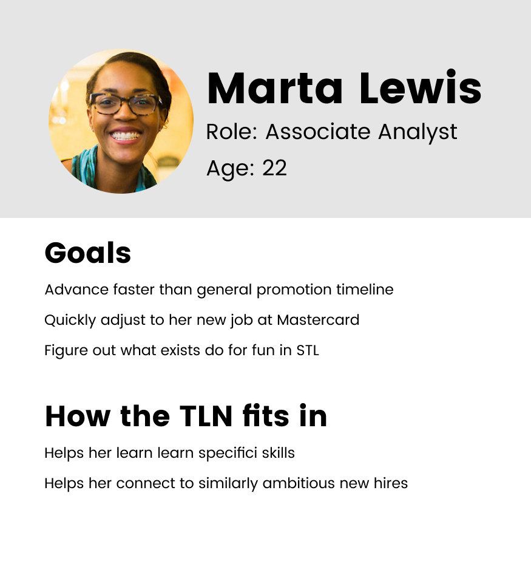
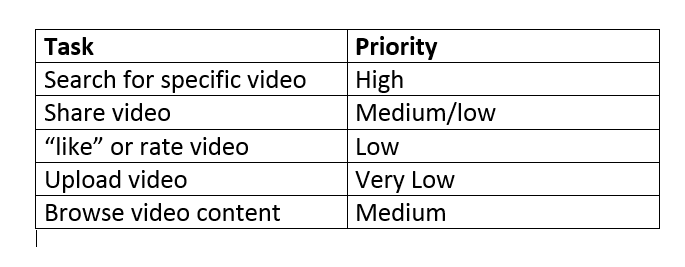
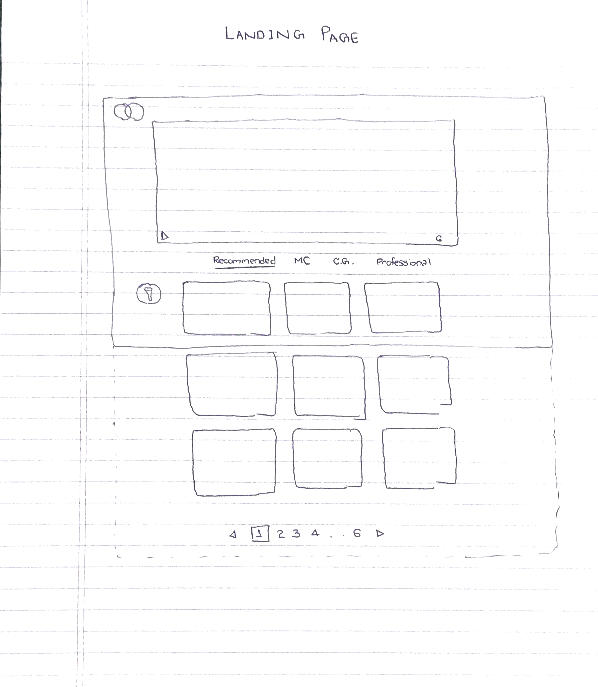
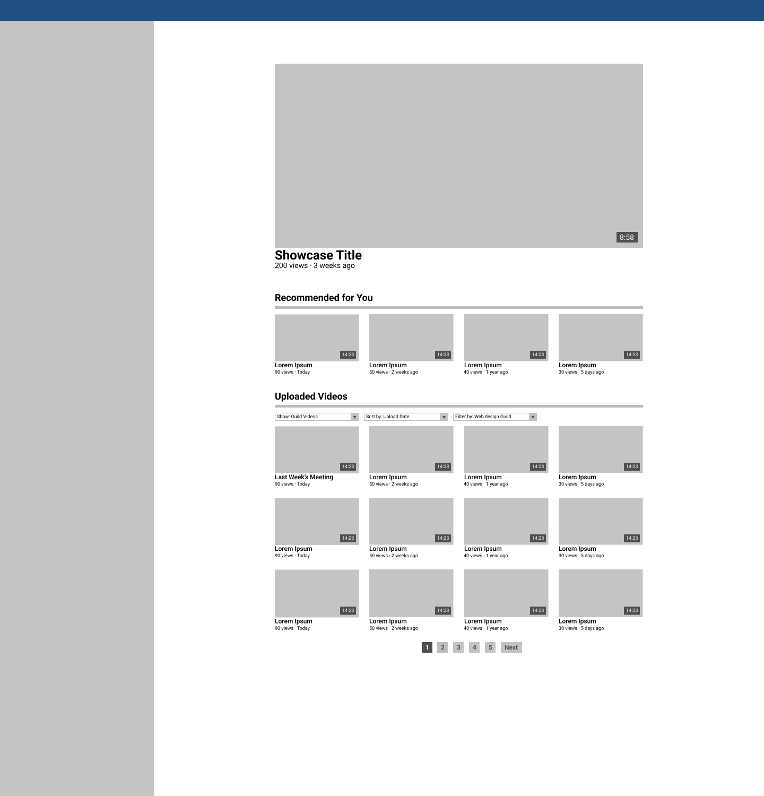
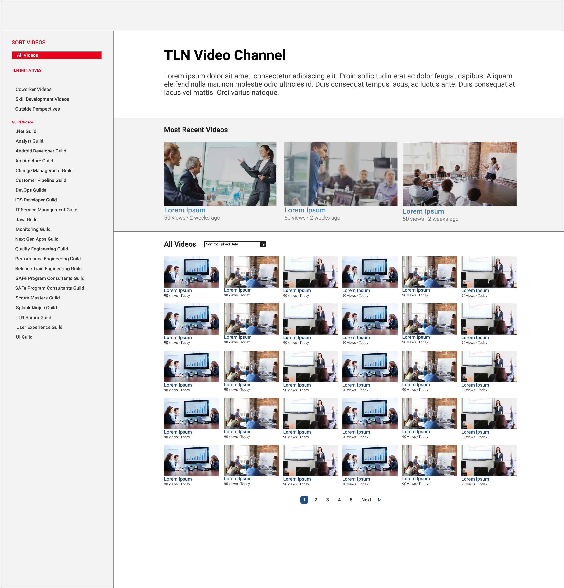

In addition to the data visualization work I did for Mastercard’s Corporate Finance department, I also had the chance to do some traditional design work. As an additional project, I led the redesign of the Technology Leadership Network’s (TLN) video platform.
The TLN is a business resource group that focuses on making resources on the latest technology accessible for all members of Mastercard. It does this thorugh a variety of methods, both in person and virtual. It’s video platform is the main way its main method for virtual education. The problem was that its not very usable, which as a result, led to a lack of use. The TLN wanted us to start from scarth to help them create a new platform. My job was to conduct user research to determine what exactly TLN members wanted out of the site and what they found to be unusable about it, ideate, experiment, and iterate potential solutions solutions, and final implement our selected solution in HTML, CSS, and JavaScript.
To figure out what people wanted out of the site, we conducted user research through two methods. We interviewed TLN members and analyzed the existing view data. From our interviews, we found that there was really only one persona for TLN users. They were within the first 5 years of the career and in individual contributor rather than managerial positions. The TLN has a wide variety of subjects for its videos, and its members tend to use its educational videos to dive deeper into their own subject fields rather than branching out. However, across all of our interviews, people said they valued the “tutorial” style videos the most. Additionally, they tended to watch rather than upload videos. persona
With this persona created, from our interviews, we looked into what types of videos people were viewing the most, so that we could match motivation to behavior. We also wanted to check for behavior that was not mentioned during interviews.
First, we wanted to double check that people actually did find tutorial videos most useful. Turns out, the data did match our research, as the three most watched videos were all instructional tutorial videos.
We also found that one category of consistently watched videos were videos of guild meetings. Guilds at Mastercard are functional interest group groups that span across teams. So while there may be web developers across many teams, there is one central web development guild. They meet once or twice a month and help form communities of people interested in similar things.
Another thing we found was that views were concentrated around a handful of videos that had 5x as many as the rest. We thought this was interesting, and would use this going forward.
Once we had the information from both interviews and the view data, we took our persona and attached a task prioritization. Heres what that looked like.
Its pretty bare bones, but sometimes less is more. Having a list of potential tasks and priorities assigned to them helped us decide what to include and what to exclude, along with what to emphasize.
We then began the ideation phase. Given that the task with the highest prioritization was finding a specific video, that is where we put most of our emphasis. We also wanted it to be easy to evaluate the quality of the content of a video at a glance, so that when people di explore the TLN’s videos they would be able to figure eout what they wanted to watch, so that most people only watched one video at a time.
The biggest challenge we faced was organization and navigation. Due to security issues, we couldn’t allow users to “search” for videos using a search bar like you would on Youtube. As a result, we had to make sure that we organized the videos and platform as a whole that would make it as easy as possible for people to find what they were looking for.
We started with paper prototypes, and focused on getting as many ideas as possible out. We then evaluated our prototypes by having users attempt a variety of navigation tasks on the paper version of the site. We had originally organized our landing page by placing a “showcase” video at the top, where the TLN would be able to place a video that they believed a large proportion of users would want to see. Under that, we organized the rest of the videos by category using a tab system. Usability testing told us this wasn’t the best method.
We pivoted away from categories and instead used metrics to organize the rest of the videos. We organized the rest of the videos by placing in a recent videos section below the showcase, and then an “all videos” section, sorted by number of views, below that.
Considering the distribution of views is heavily concentrated around 3 videos at time we then increased the number of videos in the showcase section, when someone comes to a site they are probably looking for a video the TLN is showcasing. If not, they might be looking for their recent guild meeting video, which if they checked for in a timely manner would be in the recent video section. If they are just browsing, the “all videos” section provides them with the rest of the videos, sorted so that they know what everyone else is watching.
However, this excluded one use case. What if someone is looking for one specific video, but it is not in the showcase or recent videos sections? Looking for it based on the number of views it has seems like an ineffective way to search for video content. While this would normally be where a search bar shines, we couldn’t use one. We had previously tried to group videos into 4 wide categories, and found that it didn’t work. So instead, we opted for narrow explicit categories.
We organized these categories based off of the TLN’s initiatives, and guilds. To create space for all of these categories without hiding them, we included a sticky side nav that allowed for quick navigation between video category.
With our original layout, we tested 3 tasks across 5 subjects, and had 6/15 tasks completed. With our new layout, we tested 10 users with the same three tasks and had 28/30 tasks completed. With the feedback from usability testing very positive, we moved to high fidelity prototyping, where we worked on the visual design of our site.
Heres what it looked like in the end.
After this, we moved to implementing our site. I took a backseat to the other intern here, as his background was in front end development. We used HTML, CSS, and JavaScript to cement our design in code.
The biggest tradeoff we made was sacrificing time doing user research and usability testing for constant forward progress. We had about 6 weeks to conduct user research, brainstorm solutions, test our potential solutions, narrow down to one refined solution, and them implement it. We could have spent more time doing research or refining our product to make it more usable. However, given the time frame, we would not have been able to finish. We believed that an imperfect yet quality product that is implemented, and refinable by others once we leave, was a better option to pursue than a slightly better produvt that wasn’t implemented.
I learned a lot about user research, and translating needs into features. This project also helped me realize where some of strengths and weaknesses as a designer lie. My visual design could use some work, as it took a good amount of time to get this from mid fidelity to a presentable high fidelity prototype. This project reaffirmed my interest in pursuing a career in design, as I actually thought it was more interesting than my official work as member of the Data and Analytics team.